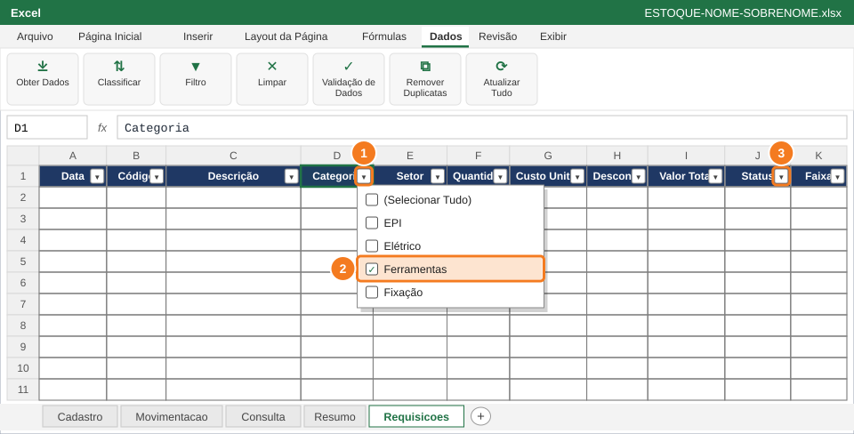
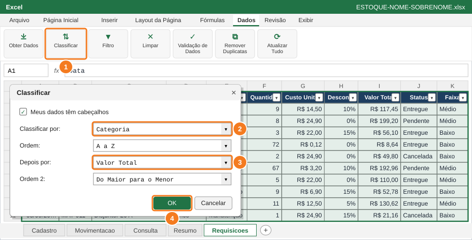
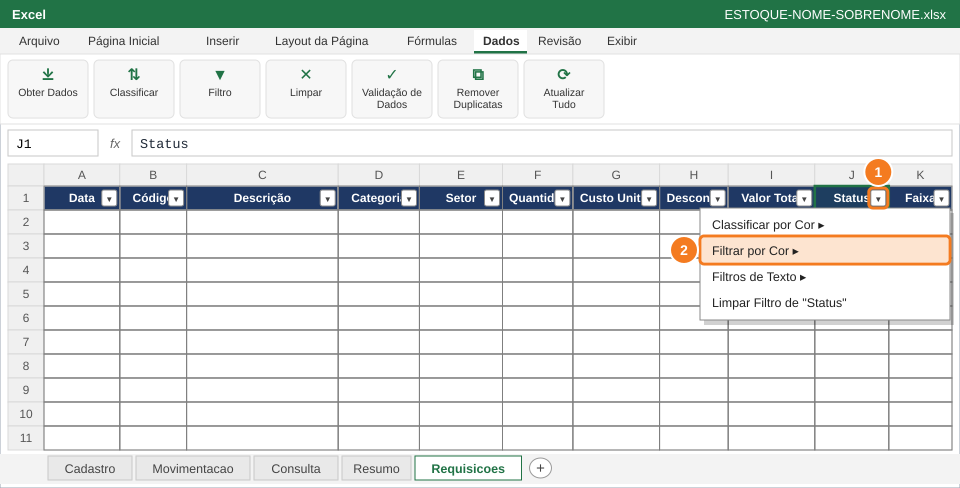
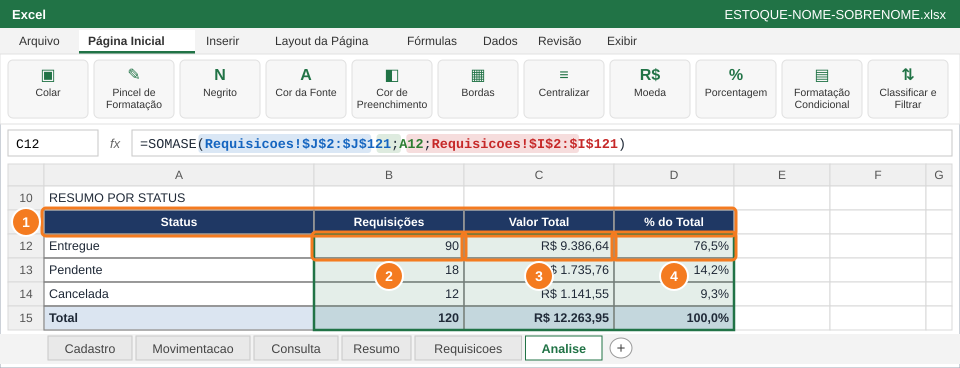

Usar filtros e classificação para responder rápido a perguntas sobre a base e montar um resumo por status e uma consulta de código com CONT.SE, SOMASE, PROCV e SEERRO.
Você vai usar
AutoFiltro (Ctrl+Shift+L)
Classificar em dois níveis
Filtrar por Cor
CONT.SE e SOMASE
PROCV com SEERRO
Referência absoluta ($)
Aba de trabalho:Requisicoes e Analise · Slides de apoio: Arquivo 4 — slides 31–33; Arquivo 5 — slides 9–11.1, 22–23, 28–31
1
Ative o AutoFiltro e filtre Ferramentas pendentes

Seta de Categoria (1) → só Ferramentas (2); seta de Status (3) → só Pendente.
Clique em A1 e ligue o filtro: guia Dados → Filtro, ou Ctrl+Shift+L. Cada título ganha uma seta ▼.
Clique na seta de Categoria (1), desmarque (Selecionar Tudo) e marque só Ferramentas (2) → OK.
Clique na seta de Status (3), deixe marcado só Pendente → OK.
Olhe a barra de status: aparece "X de 120 registros encontrados".
✅ VerifiqueSobram apenas linhas de Categoria Ferramentas com Status Pendente e os números das linhas ficam azuis.
🐧 No LibreOffice CalcDados → AutoFiltro e use a seta de cada coluna.
2
Limpe os filtros e classifique em dois níveis

Dados → Limpar. Depois Classificar (1): Categoria A a Z (2), depois Valor Total do maior para o menor (3).
Guia Dados → Limpar para mostrar as 120 linhas de novo.
Clique em A1 → Classificar (1).
Classificar por Categoria, ordem A a Z (2). Clique em Adicionar Nível: Depois porValor Total (3), ordem Do Maior para o Menor.
Clique em OK (4).
⚠️ AtençãoClique em uma célula da tabela antes de classificar. Assim o Excel leva a linha inteira junto, e os dados não se misturam.
✅ VerifiqueDentro de cada Categoria, o Valor Total vai do maior para o menor.
3
Filtre pela cor das linhas canceladas

Seta de Status (1) → Filtrar por Cor (2): só as linhas vermelhas aparecem.
Clique na seta de Status (1) → Filtrar por Cor (2).
Escolha o vermelho claro da formatação condicional feita na Questão 8.
Depois use Dados → Limpar para voltar a ver todas as linhas.
💡 DicaSó dá para filtrar por cor porque a Questão 8 pintou as linhas: formatação e filtro trabalham juntos.
✅ VerifiqueSó aparecem linhas vermelhas (Cancelada). Depois de Limpar, as 120 linhas voltam.
4
Monte o resumo por Status na aba Analise

Em Analise, A11:D15 (1): CONT.SE (2), SOMASE (3) e % do total com referência absoluta (4).
Em A10 digite RESUMO POR STATUS. Em A11:D11 (1): Status, Requisições, Valor Total, % do Total. Em A12:A15: Entregue, Pendente, Cancelada, Total.
B12 (2) conta as requisições de cada status; C12 (3) soma o valor de cada status; D12 (4) calcula a participação. Copie B12:D12 até a linha 14.
Na linha Total: B15, C15 e D15 com SOMA das três linhas de cima.
Formatos: C12:C15Moeda; D12:D15Porcentagem com 1 casa; B12:B15Número. Linha Total em negrito, com borda dupla embaixo.